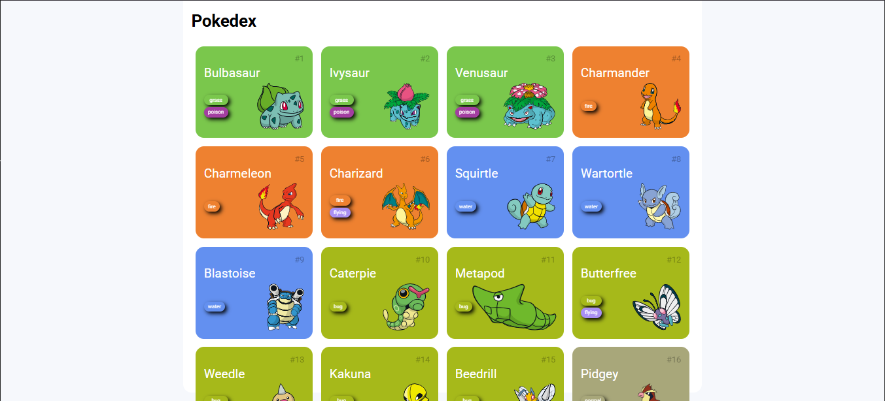
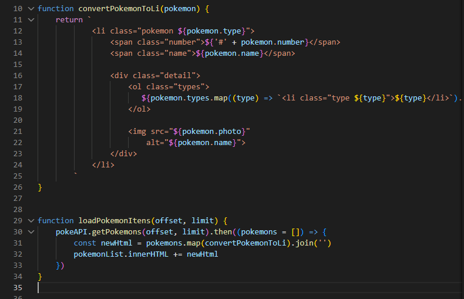
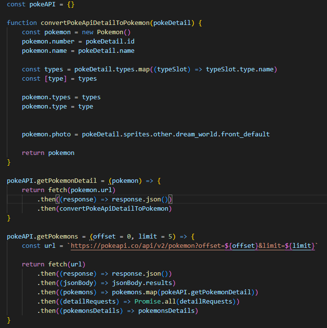

Engenharia de Dados, SQL & Desenvolvimento de Software com foco em resultados reais.
Paulo Vitor Gamileira Alves | São Paulo - SP | Ciência da Computação (Faculdade Impacta) | SQL Server, Python, JavaScript & Orquestração de Agentes de IA.
Paulo Vitor Gamileira Alves | São Paulo - SP | Ciência da Computação (Faculdade Impacta) | SQL Server, Python, JavaScript & Orquestração de Agentes de IA.
Arquitetura Fact Constellation no SQL Server processando +20,4 milhões de registros oficiais do TSE (SP 2018 e 2022). Pipeline ETL em Python (Pandas em chunks), limpeza de Staging com CTEs e 5 Views Analíticas OLAP dos 10 KPIs para Power BI.
🔗 Ver Repositório no GitHub
API RESTful desenvolvida 100% à mão em Python com FastAPI e Pydantic. Implementa CRUD completo de advogados sincronizando identidades do Supabase Auth Admin (UUID) com persistência relacional no PostgreSQL.
🔗 Ver Repositório no GitHub
Ferramenta autoral em produção na BoxPDV que audita retenção, idade (dias) e tamanho (MB) de backups SQL Server sincronizados em nuvem, emitindo alertas automáticos e relatórios CSV para prevenção de perda de dados.
🔗 Ver Repositório no GitHub



Aplicação Mobile-First construída à mão em HTML5, CSS3 e JavaScript puro. Consome a PokéAPI com requisições assíncronas paralelas (Promise.all), paginação dinâmica e modal detalhado de atributos.
🔗 Ver Repositório no GitHub
SPA Multitenant com React, TypeScript e Supabase. Motor de pontuação automatizado via Triggers PL/pgSQL no PostgreSQL, Row Level Security (RLS), Edge Functions integradas à API da ESPN e orquestração com OpenSpec.
🔗 Ver Repositório no GitHub
Plataforma educacional gamificada com Next.js, Tailwind CSS, Supabase Auth e motor Google Gemini API para geração de recomendações personalizadas de estudo, Kanban interativo e relatórios em PDF com Python.
🔗 Ver Repositório no GitHub
Sou Paulo Vitor Gamileira Alves, estudante do 3º semestre de Ciência da Computação na Faculdade Impacta (São Paulo - SP) e profissional atuante em Suporte Técnico de Sistemas e Banco de Dados SQL na BoxPDV. Tenho base sólida em resolução de incidentes críticos em produção (SQL Server, tributação fiscal NF-e/NFC-e/SAT e automação com Python), combinada com projetos práticos em Engenharia de Dados/BI, APIs REST e Desenvolvimento Full-Stack assistido por orquestração de Agentes de IA.
"O impossível é só questão de opinião"